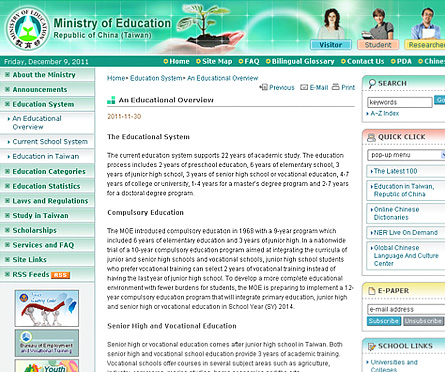
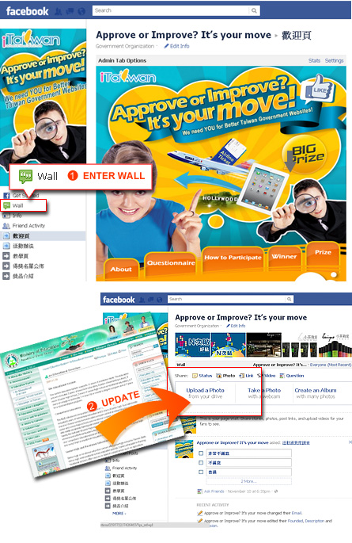
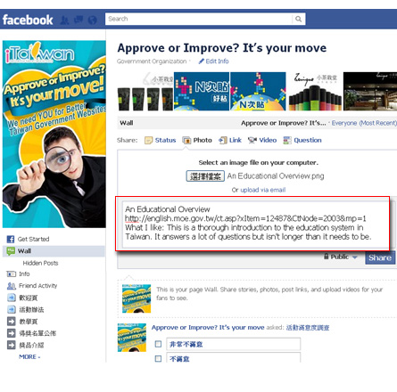

To start off, log into your Facebook account! Next, head over to one of the government websites in English below—any one of them will do—and browse around. Find a service, feature, aspect of design that you like, or find one that you think needs to be improved and tell us what you think about it. Check out the steps below for more info.- On a Windows PC, open the website you want to approve or improve, then press the “Print Screen” button on your keyboard. Press the Start Menu and open up Paint (its default location is Start > Programs > Accessories). In Paint, select the Edit menu, hit paste, and save the file! Here are some suggestions to get you started on finding something you like (or want to improve): The quality of the English writing, the accuracy of information, the completeness of the content, the effectiveness of the website’s search feature, the user-friendliness of the websites, the design, etc., etc…
- 
- Go to our event page on Facebook and use the “Add Photo” feature to post your screen shot to the wall.
- 
- After uploading your screen shot, tell us about it. What’s the website’s name and URL? And more importantly: What do you like about it? What could be better? By the way, completing this step enters you to win great prizes like airfare or an
iPad 2! Here are some sample comments for your reference:
1.Sun Moon Lake Scenic Area
http://www.sunmoonlake.gov.tw/EN/02000465.aspx
What I like: The website has some gorgeous pictures that really draw our attention, and there is a LOT of information available.
What could be better: I think there is maybe too much information; it's a bit hard to find what you're looking for. Also, the "traffic information" section doesn't tell me how to get there!
2.An Educational Overview
http://english.moe.gov.tw/ct.asp?xItem=12487&CtNode=2003&mp=1
What I like: This is a thorough introduction to the education system in Taiwan. It answers a lot of questions but isn't longer than it needs to be.
What could be better: Some of the sentences are not easy to understand. They could be rewritten in more colloquial English. I don't really like the website's design because there is too much text all at once (Maybe there could be more pictures?).
3: Central Weather Bureau
http://www.cwb.gov.tw/eng/index.htm
What I like: Up-to-date weather info for not just Taiwan but the whole world! The typhoon warnings (when they happen) are also really useful. The "Life Weather" section is also really charming.
What could be better: Some of the English could sound more natural, like "Be ware of farming safety in the rain." It's easy to understand but it just doesn't sound like what we would say in English. - 
|